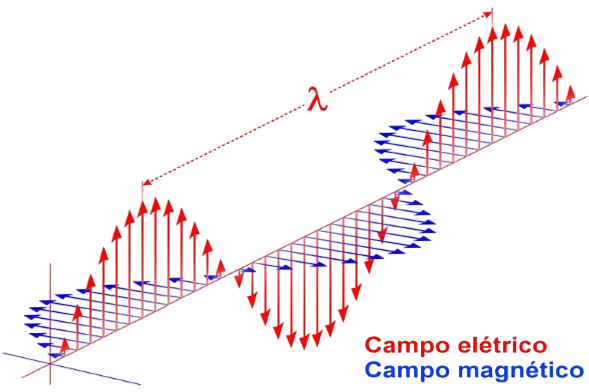

Eletromagnéticas
Ondas eletromagnéticas são formas de energia que se propagam no vácuo ou em materiais, como a luz e ondas de rádio. Elas não precisam de um meio físico para se mover.


As ondas estão presentes em muitos aspectos da nossa vida cotidiana, desde o som que ouvimos até a luz que enxergamos. Elas são responsáveis pela transmissão de energia sem transportar matéria, podendo se propagar através de diversos meios, como o ar, a água e até o vácuo, no caso das ondas eletromagnéticas. Existem diferentes tipos de ondas, cada uma com suas características e aplicações, desde a comunicação por rádio até os fenômenos naturais.

Ondas eletromagnéticas são formas de energia que se propagam no vácuo ou em materiais, como a luz e ondas de rádio. Elas não precisam de um meio físico para se mover.
Ondas mecânicas são aquelas que precisam de um meio material (sólido, líquido ou gasoso) para se propagar, como o som e as ondas na água. Elas transportam energia, mas não matéria, e podem ser transversais ou longitudinais.